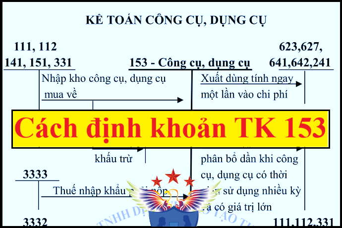

Hướng dẫn cách hạch toán Tài khoản 153 áp dụng chế độ kế toán theo Thông tư 99/2025/TT-BTC mới nhất 2026, cách hạch toán Công cụ dụng cụ của Doanh doanh nghiệp, hạch toán phân bổ công cụ dụng cụ, khi mua CCDC về ...
1. Nguyên tắc kế toán TK 153 - Công cụ, dụng cụ
Nguyên tắc kế toán
a) Tài khoản này dùng để phản ánh giá trị hiện có và tình hình biến động tăng, giảm các loại công cụ, dụng cụ của doanh nghiệp. Công cụ, dụng cụ là những tư liệu lao động không có đủ tiêu chuẩn quy định về giá trị và thời gian sử dụng đối với TSCĐ. Vì vậy công cụ, dụng cụ được quản lý và hạch toán như nguyên liệu, vật liệu. Theo quy định hiện hành, những tư liệu lao động sau đây nếu không đủ tiêu chuẩn ghi nhận TSCĐ thì được ghi nhận là công cụ, dụng cụ:
- Các đà giáo, ván khuôn, công cụ, dụng cụ gá lắp chuyên dùng cho sản xuất xây lắp;
- Các loại thiết bị, phụ tùng thay thế; các loại bao bì bán kèm theo hàng hóa có tính tiền riêng, nhưng trong quá trình bảo quản hàng hóa vận chuyển trên đường và dự trữ trong kho có tính khấu hao để trừ dần vào giá trị của bao bì;
- Những dụng cụ, đồ nghề bằng thủy tinh, sành, sứ;
- Phương tiện quản lý, đồ dùng văn phòng;
- Quần áo, giày dép chuyên dùng để làm việc;...
b) Kế toán nhập, xuất, tồn kho công cụ, dụng cụ trên Tài khoản 153 được phản ánh theo giá gốc. Nguyên tắc xác định giá gốc công cụ, dụng cụ nhập kho tương tự như hướng dẫn tại Tài khoản 152 - Nguyên liệu, vật liệu.
c) Kế toán chi tiết công cụ, dụng cụ phải thực hiện theo từng kho, từng loại, từng nhóm, từng thứ công cụ, dụng cụ. Công cụ, dụng cụ xuất dùng cho sản xuất, kinh doanh, cho thuê phải được theo dõi cả về hiện vật và giá trị trên sổ kế toán chi tiết theo nơi sử dụng, theo đối tượng thuê và người chịu trách nhiệm vật chất. Đối với công cụ, dụng cụ có giá trị lớn, quý hiếm cần có cách thức bảo quản đặc biệt.
d) Đối với các công cụ, dụng cụ có giá trị nhỏ khi xuất dùng cho sản xuất, kinh doanh có thể ghi nhận toàn bộ một lần vào chi phí sản xuất, kinh doanh.
đ) Trường hợp công cụ, dụng cụ, bao bì luân chuyển, đồ dùng cho thuê xuất dùng hoặc cho thuê liên quan đến hoạt động sản xuất, kinh doanh trong nhiều kỳ thì được ghi nhận vào Tài khoản 242 - Chi phí chờ phân bổ và phân bổ dần vào chi phí sản xuất, kinh doanh.
e) Công cụ, dụng cụ liên quan đến các giao dịch bằng ngoại tệ được thực hiện theo hướng dẫn tại Tài khoản 413 - Chênh lệch tỷ giá hối đoái.
2. Kết cấu và nội dung phản ánh của Tài khoản 153 - Công cụ, dụng cụ
| Bên Nợ | Bên Có |
|
- Trị giá thực tế của công cụ, dụng cụ nhập kho do mua ngoài, tự chế, thuê ngoài gia công chế biến, nhận góp vốn,...;
- Trị giá công cụ, dụng cụ cho thuê nhập lại kho;
- Trị giá thực tế của công cụ, dụng cụ thừa phát hiện khi kiểm kê;
|
- Trị giá thực tế của công cụ, dụng cụ xuất kho để sử dụng cho sản xuất, kinh doanh, cho thuê hoặc góp vốn,...;
- Chiết khấu thương mại sau khi mua công cụ, dụng cụ được hưởng;
- Trị giá công cụ, dụng cụ trả lại cho người bán hoặc được người bán giảm giá;
- Trị giá công cụ, dụng cụ thiếu phát hiện khi kiểm kê;
|
|
Số dư bên Nợ:
Trị giá thực tế của công cụ, dụng cụ tồn kho tại thời điểm kết thúc kỳ kế toán.
|
Theo Thông tư 99/2025/TT-BTC thì tài khoản 153 - Công cụ dụng cụ không có tài khoản chi tiết cấp 2
=>>> Doanh nghiệp có thể mở thêm các tài khoản chi tiết công cụ, dụng cụ (như: thiết bị, phụ tùng thay thế, bao bì luân chuyển, đồ dùng cho thuê,...) cho phù hợp với đặc điểm hoạt động sản xuất, kinh doanh và yêu cầu quản lý của đơn vị mình.
3. Cách hạch toán Công cụ dụng cụ - Tải khoản 153
|
a) Mua công cụ, dụng cụ nhập kho, căn cứ vào hóa đơn, phiếu nhập kho và các chứng từ có liên quan, ghi: Nợ TK 153 - Công cụ, dụng cụ Nợ TK 133 - Thuế GTGT được khấu trừ (1331) (nếu có) Có các TK 111, 112, 141, 331,...
b) Trường hợp khoản chiết khấu thương mại hoặc giảm giá nhận được sau khi mua công cụ, dụng cụ thì doanh nghiệp phải căn cứ vào tình hình biến động của công cụ, dụng cụ để phân bổ số chiết khấu thương mại, giảm giá hàng bán được hưởng cho số công cụ, dụng cụ còn tồn kho hoặc số đã xuất dùng cho hoạt động sản xuất kinh doanh, ghi: Nợ các TK 111, 112, 331,... Có TK 153 - Công cụ, dụng cụ (nếu công cụ, dụng cụ còn tồn kho) Có TK 154 - Chi phí SXKD dở dang (nếu công cụ, dụng cụ đã xuất dùng cho sản xuất kinh doanh) Có các TK 641, 642 (nếu công cụ, dụng cụ đã xuất dùng cho hoạt động bán hàng, quản lý doanh nghiệp) Có TK 242 - Chi phí chờ phân bổ (nếu được phân bổ dần) Có TK 632 - Giá vốn hàng bán (nếu sản phẩm do công cụ, dụng cụ đó cấu thành đã được xác định là tiêu thụ trong kỳ) Có TK 133 - Thuế GTGT được khấu trừ (1331) (nếu có). c) Trả lại công cụ, dụng cụ đã mua cho người bán, ghi: Nợ TK 331 - Phải trả cho người bán Có TK 153 - Công cụ, dụng cụ (giá trị công cụ, dụng cụ trả lại) Có TK 133 - Thuế GTGT được khấu trừ (nếu có) (thuế GTGT đầu vào của công cụ, dụng cụ trả lại cho người bán). d) Phản ánh chiết khấu thanh toán được hưởng (nếu có) trừ vào nợ phải trả người bán, ghi: Nợ TK 331 - Phải trả cho người bán Có TK 515 - Doanh thu hoạt động tài chính. đ) Xuất công cụ, dụng cụ sử dụng cho sản xuất, kinh doanh: - Nếu giá trị công cụ, dụng cụ, bao bì luân chuyển, đồ dùng cho thuê liên quan đến một kỳ kế toán hoặc các công cụ, dụng cụ có giá trị nhỏ khi xuất dùng cho sản xuất, kinh doanh có thể ghi nhận toàn bộ một lần vào chi phí sản xuất, kinh doanh, ghi: Nợ các TK 623, 627, 641, 642 Có TK 153 - Công cụ, dụng cụ. - Nếu giá trị công cụ, dụng cụ, bao bì luân chuyển, đồ dùng cho thuê liên quan đến nhiều kỳ kế toán được phân bổ dần vào chi phí sản xuất, kinh doanh hàng kỳ, ghi: + Khi xuất công cụ, dụng cụ, bao bì luân chuyển, đồ dùng cho thuê, ghi: Nợ TK 242 - Chi phí chờ phân bổ Có TK 153 - Công cụ, dụng cụ. + Khi phân bổ vào chi phí sản xuất, kinh doanh cho từng kỳ kế toán, ghi: Nợ các TK 623, 627, 641, 642,... Có TK 242 - Chi phí chờ phân bổ. - Ghi nhận doanh thu về cho thuê công cụ, dụng cụ, ghi: Nợ các TK 111, 112, 131,... Có TK 511 - Doanh thu bán hàng và cung cấp dịch vụ Có TK 3331 - Thuế GTGT phải nộp (33311). - Nhận lại công cụ, dụng cụ cho thuê, ghi: Nợ TK 153 - Công cụ, dụng cụ Có TK 242 - Chi phí chờ phân bổ (giá trị còn lại của CCDC chưa phân bổ vào chi phí), e) Đối với công cụ, dụng cụ nhập khẩu: - Khi nhập khẩu công cụ, dụng cụ, ghi: Nợ TK 153 - Công cụ, dụng cụ Có TK 331 - Phải trả cho người bán Có TK 3331 - Thuế GTGT phải nộp (33312) (nếu thuế GTGT đầu vào của hàng nhập khẩu không được khấu trừ) Có TK 3332 - Thuế tiêu thụ đặc biệt (nếu có) Có TK 3333 - Thuế xuất, nhập khẩu (chi tiết thuế nhập khẩu) Có TK 33381 - Thuế bảo vệ môi trường (nếu có). - Nếu thuế GTGT đầu vào của hàng nhập khẩu được khấu trừ, ghi: Nợ TK 133 - Thuế GTGT được khấu trừ Có TK 3331 - Thuế GTGT phải nộp (33312). - Trường hợp mua công cụ, dụng cụ có trả trước cho người bán một phần bằng ngoại tệ thì phần giá trị công cụ, dụng cụ tương ứng với số ngoại tệ trả trước được ghi nhận theo tỷ giá giao dịch thực tế tại thời điểm ứng trước. Phần giá trị công cụ, dụng cụ bằng ngoại tệ chưa trả được ghi nhận theo tỷ giá giao dịch thực tế tại thời điểm nhận công cụ, dụng cụ. g) Khi kiểm kê phát hiện công cụ, dụng cụ thừa, thiếu, mất, hư hỏng, kế toán xử lý tương tự như đối với nguyên liệu, vật liệu (xem Tài khoản 152 - Nguyên liệu, vật liệu). h) Khi thanh lý, nhượng bán công cụ, dụng cụ: - Phản ánh giá vốn, ghi: Nợ TK 632 - Giá vốn hàng bán Có TK 153 - Công cụ, dụng cụ. - Phản ánh doanh thu bán công cụ, dụng cụ, ghi: Nợ các TK 111, 112, 131 Có TK 511 - Doanh thu bán hàng và cung cấp dịch vụ
Có TK 333 - Thuế và các khoản phải nộp Nhà nước. Xem thêm: Cách tính phân bổ công cụ dụng cụ |
Kế toán Diệu Tâm xin chúc các bạn thành công!
--------------------------------------------------------
